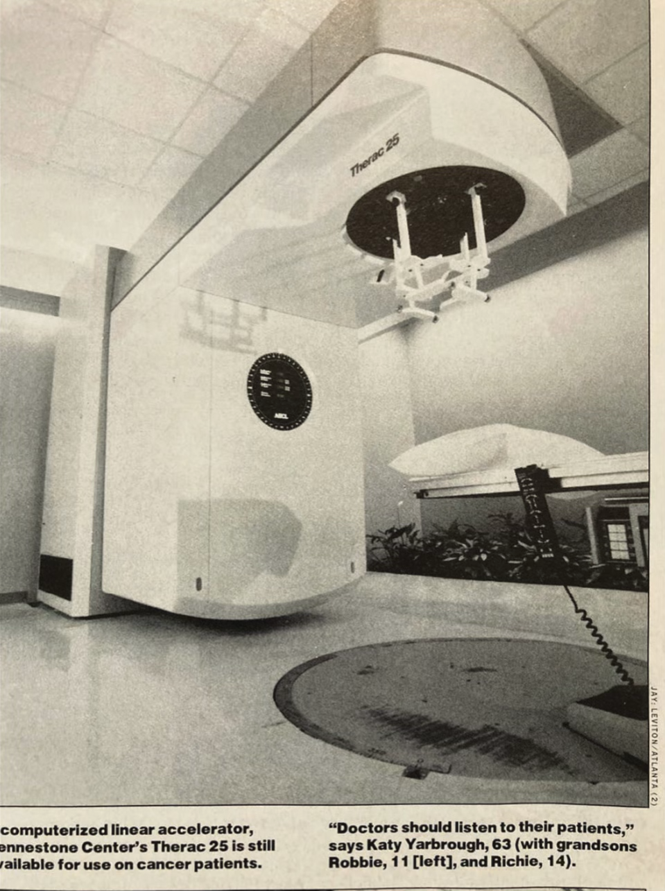
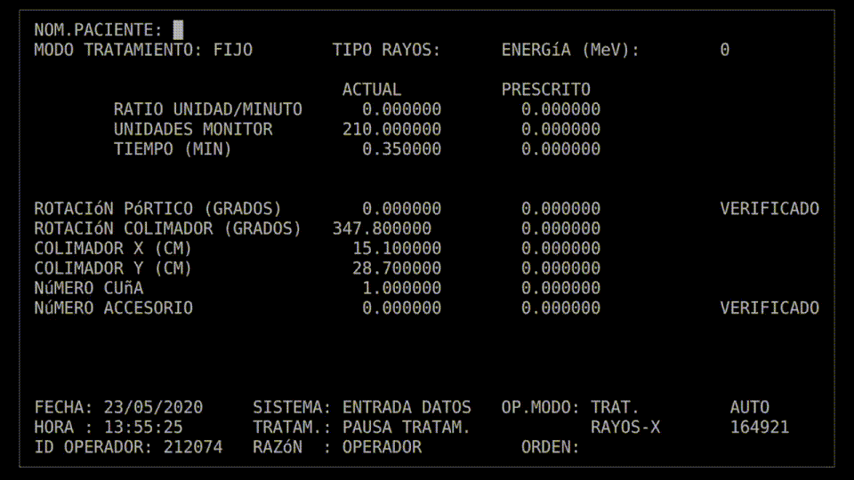
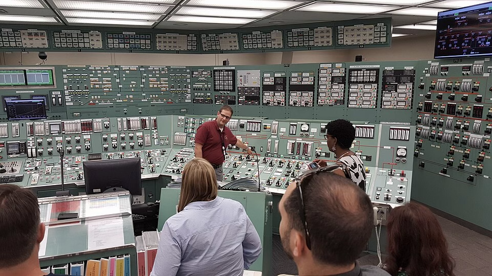

In safety-critical environments—medical radiation therapy, nuclear power generation, aviation, and chemical processing—user interfaces serve as the primary window through which human operators monitor volatile physical processes. When safety-critical interfaces fail to present clear system state information or train operators to ignore warnings, the resulting breakdown in the Gulf of Evaluation can turn routine operational adjustments into lethal events.
The Swiss Cheese Model explains how failures across multiple layers of defense can combine to harm patients[4].
Case Study 1: The Therac-25 Radiation Accelerator (1985–1987)
The Therac-25 was a computer-controlled medical linear accelerator produced by Atomic Energy of Canada Limited (AECL)[2]. Designed to deliver dual-mode radiation therapy—low-energy electron therapy and high-energy X-ray (photon) therapy—it was involved in at least six massive radiation overdose accidents between 1985 and 1987, causing severe radiation sickness, permanent paralysis, and multiple deaths [1].

Cryptic Error Messages and Operator Habituation
The Therac-25 control console relied on a DEC VT100 terminal. During operation, the software frequently halted treatment and displayed cryptic error messages consisting solely of the word `MALFUNCTION` followed by a number from 1 to 64 (e.g.,`MALFUNCTION 54`) [1].
- Undocumented Codes: Neither the user operational manual nor the facility maintenance documentation explained what these numeric codes meant. In reality, `MALFUNCTION 54` indicated a "Dose Input 2" error, signaling that the radiation monitor detected an incorrect dose rate.
- Habitation and Prompt Fatigue: The machine was plagued by frequent non-hazardous errors (such as minor table misalignment or voltage fluctuations), occurring up to 40 times a day in some clinics. Operators became thoroughly accustomed to these pauses, learning through daily repetition that pressing the `P` key (Proceed) would unpause the machine and resume treatment without adverse consequences.
- System Lie / Deceptive State Display: Following a `MALFUNCTION 54` shutdown, the console display indicated that only a fraction of the prescribed dose had been delivered (e.g., showing 6 monitor units supplied out of 200). In reality, the unscanned, raw 25 MeV electron beam had delivered a massive dose of 16,500 to 25,000 rads in less than a second over a 1 cm² area. The extreme radiation density saturated the machine’s ionization chamber sensors, causing them to falsely report a near-zero dose.

The Race Condition and Removal of Hardware Interlocks
In earlier models (Therac-6 and Therac-20), mechanical hardware interlocks physically prevented the high-power electron beam from firing unless a heavy lead beam-flattening filter was rotated into position. On the Therac-25, AECL engineers removed these physical hardware interlocks[3], relying entirely on software checks to reduce manufacturing costs. However, the software contained a critical concurrent programming flaw (a race condition):
- An experienced operator rapidly entered treatment parameters, initially typing `X` (for 25 MeV photon mode).
- Realizing the patient required electron therapy, the operator used the "cursor up" key to edit the field to `E` (electron mode), hit `ENTER` through the remaining fields, and pressed `B` (Beam On).
- If this editing sequence was executed in under eight seconds, the software's data-entry task completed after the magnet-setting task had already begun. The mode parameter updated in display memory, but the command variable sent to the hardware remained set to high-energy mode without the flattening filter or scanning magnets in place.
Because the software lacked hardware interlocks and lied about the actual dose delivered, operators repeatedly pressed `P` to proceed, administering up to five consecutive lethal doses to screaming patients before halting treatment.
Case Study 2: Three Mile Island Nuclear Accident (1979)
On March 28, 1979, Unit 2 of the Three Mile Island nuclear generating station near Harrisburg, Pennsylvania, suffered a partial core meltdown—the worst commercial nuclear disaster in United States history. While mechanical pump failures initiated the event, catastrophic interface design flaws in the main control room prevented operators from understanding the plant’s true state for over two critical hours.[6]

Deceptive Feedback: Actuation Signal vs. Functional Status
Three seconds after condensate pumps tripped, a pressure relief valve known as the Pilot Operated Relief Valve (PORV) automatically opened to relieve excess primary system pressure. Ten seconds later, as pressure dropped to normal limits, the system sent a signal for the PORV to close. However, the valve mechanically jammed open. In the control room, an indicator light labeled `RC-RV2 OPEN` monitored the PORV:
- Violation of Human Factors Principles: Contrary to standard military and industrial human engineering standards (e.g., MIL-STD-1472B), the indicator light was wired to show whether electrical power was being applied to the valve’s closing solenoid— not the actual physical position of the valve [5].
- The Gulf of Evaluation: When power to the solenoid was cut, the control panel light turned off. Operators interpreted the extinguished light as positive confirmation that the PORV was physically closed.
- Catastrophic Misdiagnosis: Because operators believed the valve was shut, they could not understand why primary system pressure continued to plummet and water levels dropped. Misinterpreting rising pressurizer water levels, operators manually shut off the emergency high-pressure injection cooling pumps, believing the primary loop was overfilling. In reality, over 32,000 gallons of reactor coolant were boiling out through the open PORV, leaving the nuclear core uncovered and initiating a partial meltdown.